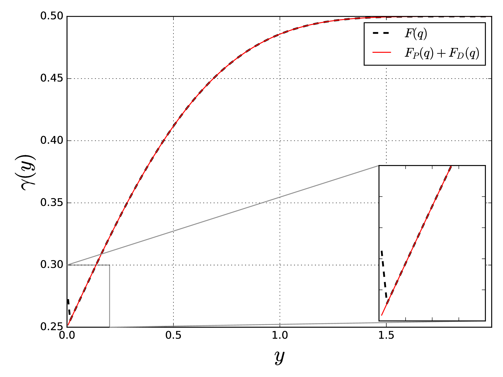
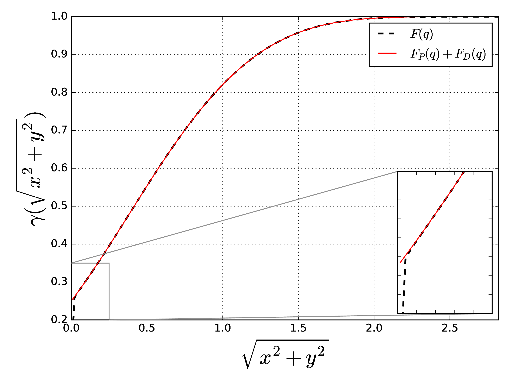
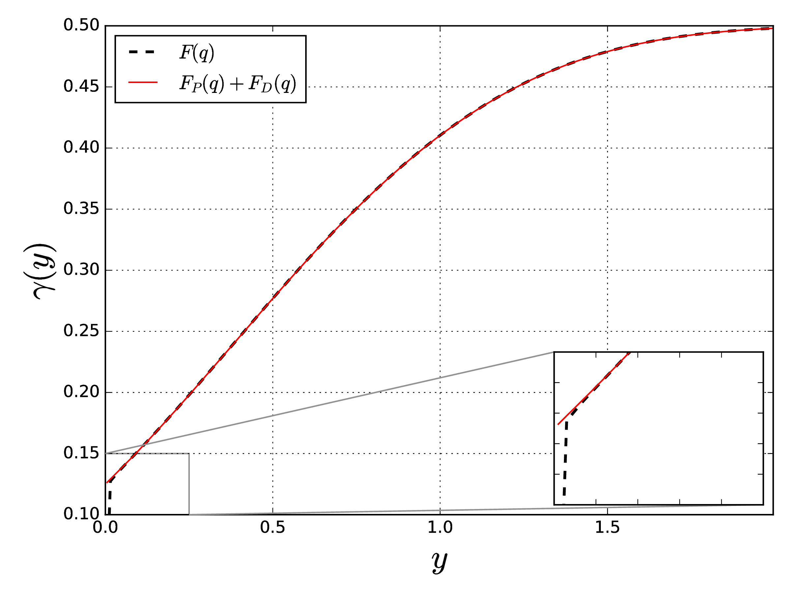
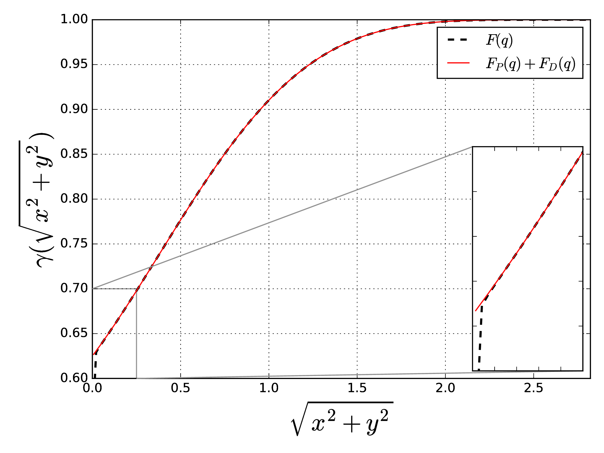
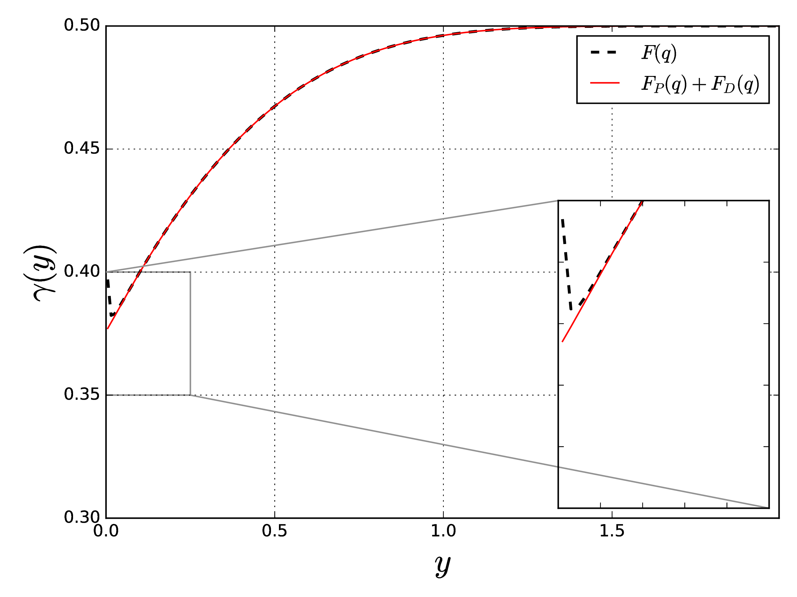
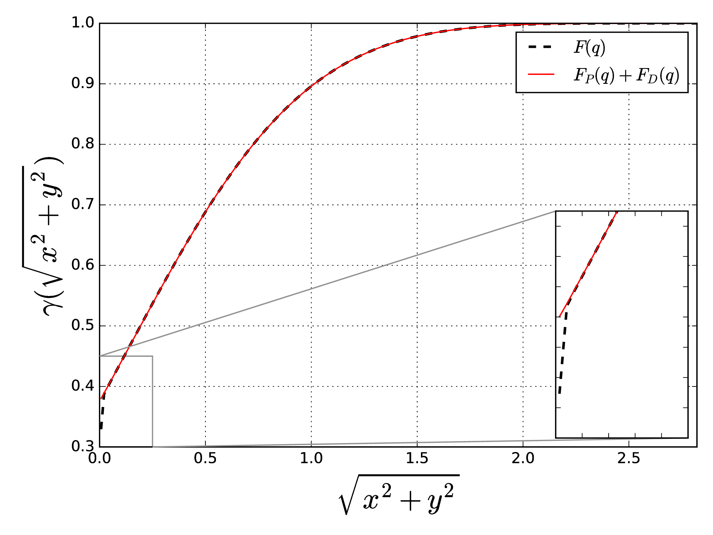

13th SPHERIC Workshop on SPH applications
Galway, Ireland, 2018
| Jose Luis Cercos-Pita |
Javier Calderon-Sanchez javier.calderon@upm.es Universidad Politécnica de Madrid 28/06/2018 |
Daniel Duque |
Let's assume a tank at rest, with no movement...
Let's go back to see where this comes from
Truncate kernel's compact support at the domain edge makes SPH interpolation fail...
...unless consistency is recovered
Boundary Integrals
This limits the applicability of Boundary Integrals!
We need something new...
To improve the accuracy of numerical Boundary Integrals approach without increasing its computational cost.
So, kernel is normalized
\[ \int_{\bar{\Omega}} W_h (\mathbf{y} - \mathbf{x})\ d\mathbf{y} \, + \int_{\Omega^{*}} W_h (\mathbf{y} - \mathbf{x})\ d\mathbf{y} = 1 \]And therefore
\[ \gamma(\mathbf{x}) = 1 - \int_{\Omega^{*}} W_h (\mathbf{y} - \mathbf{x})\ d\mathbf{y} \]Let's seek a function $F (\mathbf{y} - \mathbf{x})$
\[ \int_{\Omega^{*}} \nabla \cdot \left[ (\mathbf{y} - \mathbf{x})\ F (\mathbf{y} - \mathbf{x}) \right] = \int_{\Omega^{*}} W_h (\mathbf{y} - \mathbf{x})\ d\mathbf{y} \]So that...
\[ \gamma(\mathbf{x}) = 1 + \int_{\partial \bar{\Omega}} \mathbf{n} (\mathbf{y}) \cdot (\mathbf{y} - \mathbf{x})\ F(\mathbf{y} - \mathbf{x})\ d\mathbf{y} \]so that we can express $\gamma (\mathbf{x})$ in terms of surface terms.
The general solution is given by the equality of the integrands
\[ \frac{1}{\rho^{d-1}} \frac{d \left( \rho^d \, F (\rho) \right) }{d \rho} = W_h (\rho) \]and choosing e.g. a Quintic Wendland kernel
\[ F(\rho) = \frac{1}{h^d} \ \tilde{F} \left (\frac\rho{h} \right) \] \[ \tilde{F} (q) = - \frac{7}{64 \pi} \left[ \frac{2}{7} q^5 - \frac{5}{2} q^4 + 8 q^3 - 10 q^2 + 8 \right] - \color{red}{\frac{1}{2 \pi \, q^2}} \]It's a singular function!
Which is the effect?
No matter how much the support is increased!
Apparently, we just introduced new difficulties...
However, let us turn Shepard factor into its discretized form
\[ \gamma(\mathbf{x}) = 1 + \sum_j \int_{S_j} \mathbf{n} (\mathbf{y}) \cdot (\mathbf{y} - \mathbf{x}) \ F ( \mathbf{y} - \mathbf{x} )\, d\mathbf{y} \]
Assuming patches at the boundary are sufficiently flat...
and noting that we can split the kernel in two parts...
\[ \tilde{F} (q) = - \frac{7}{64 \pi} \left[ \frac{2}{7} q^5 - \frac{5}{2} q^4 + 8 q^3 - 10 q^2 + 8 \right] - \color{red}{\frac{1}{2 \pi \, q^2}} \]We can integrate it separately
We keep on solving it numerically, but...
...for the divergent part we can find an analytical solution
\[ \mathbf{n}_j \cdot (\mathbf{y} - \mathbf{x} ) \int_{S_j} F_\text{D} (\mathbf{y} - \mathbf{x}) \, d\mathbf{y} = \displaystyle -\frac1{2\pi} \Delta\theta_j \]
This formulation correctly predicts the value of the Shepard factor at the boundary
In the particular case of a flat wall
\[ \gamma(\mathbf{x}) - 1 \rightarrow -\frac{1}{2\pi} \pi = -\frac{1}{2} \]Combining flat patches and approaching it with different angles, we obtain Shepard values at corners
90º
Vertical
Diagonal
45º
Vertical
Diagonal
135º
Vertical
Diagonal
How does it behave compared to what we had?